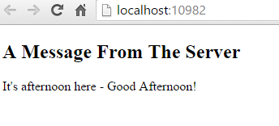

Dependency Injection and Controllers¶
By Steve Smith
ASP.NET Core MVC controllers should request their dependencies explicitly via their constructors. In some instances, individual controller actions may require a service, and it may not make sense to request at the controller level. In this case, you can also choose to inject a service as a parameter on the action method.
Sections:
Dependency Injection¶
Dependency injection is a technique that follows the Dependency Inversion Principle, allowing for applications to be composed of loosely coupled modules. ASP.NET Core has built-in support for dependency injection, which makes applications easier to test and maintain.
Constructor Injection¶
ASP.NET Core’s built-in support for constructor-based dependency injection extends to MVC controllers. By simply adding a service type to your controller as a constructor parameter, ASP.NET will attempt to resolve that type using its built in service container. Services are typically, but not always, defined using interfaces. For example, if your application has business logic that depends on the current time, you can inject a service that retrieves the time (rather than hard-coding it), which would allow your tests to pass in implementations that use a set time.
1 2 3 4 5 6 7 8 9 | using System;
namespace ControllerDI.Interfaces
{
public interface IDateTime
{
DateTime Now { get; }
}
}
|
Implementing an interface like this one so that it uses the system clock at runtime is trivial:
1 2 3 4 5 6 7 8 9 10 11 12 13 | using System;
using ControllerDI.Interfaces;
namespace ControllerDI.Services
{
public class SystemDateTime : IDateTime
{
public DateTime Now
{
get { return DateTime.Now; }
}
}
}
|
With this in place, we can use the service in our controller. In this case, we have added some logic to the HomeController Index method to display a greeting to the user based on the time of day.
1 2 3 4 5 6 7 8 9 10 11 12 13 14 15 16 17 18 19 20 21 22 23 24 25 26 27 28 29 30 31 32 33 | using ControllerDI.Interfaces;
using Microsoft.AspNet.Mvc;
namespace ControllerDI.Controllers
{
public class HomeController : Controller
{
private readonly IDateTime _dateTime;
public HomeController(IDateTime dateTime)
{
_dateTime = dateTime;
}
public IActionResult Index()
{
var serverTime = _dateTime.Now;
if (serverTime.Hour < 12)
{
ViewData["Message"] = "It's morning here - Good Morning!";
}
else if (serverTime.Hour < 17)
{
ViewData["Message"] = "It's afternoon here - Good Afternoon!";
}
else
{
ViewData["Message"] = "It's evening here - Good Evening!";
}
return View();
}
}
}
|
If we run the application now, we will most likely encounter an error:
An unhandled exception occurred while processing the request.
InvalidOperationException: Unable to resolve service for type 'ControllerDI.Interfaces.IDateTime' while attempting to activate 'ControllerDI.Controllers.HomeController'.
Microsoft.Extensions.DependencyInjection.ActivatorUtilities.GetService(IServiceProvider sp, Type type, Type requiredBy, Boolean isDefaultParameterRequired)
This error occurs when we have not configured a service in the ConfigureServices method in our Startup class. To specify that requests for IDateTime should be resolved using an instance of SystemDateTime, add the highlighted line in the listing below to your ConfigureServices method:
1 2 3 4 5 6 7 | public void ConfigureServices(IServiceCollection services)
{
services.AddMvc();
// Add application services.
services.AddTransient<IDateTime, SystemDateTime>();
}
|
Note
This particular service could be implemented using any of several different lifetime options (Transient, Scoped, or Singleton). See Dependency Injection to understand how each of these scope options will affect the behavior of your service.
Once the service has been configured, running the application and navigating to the home page should display the time-based message as expected:
Tip
See Unit Testing to learn how explicitly requesting dependencies in controllers makes code easier to test.
ASP.NET Core’s built-in dependency injection supports having only a single constructor for classes requesting services. If you have more than one constructor, you may get an exception stating:
An unhandled exception occurred while processing the request.
InvalidOperationException: Multiple constructors accepting all given argument types have been found in type 'ControllerDI.Controllers.HomeController'. There should only be one applicable constructor.
Microsoft.Extensions.DependencyInjection.ActivatorUtilities.FindApplicableConstructor(Type instanceType, Type[] argumentTypes, ConstructorInfo& matchingConstructor, Nullable`1[]& parameterMap)
As the error message states, you can correct this problem having just a single constructor. You can also replace the default dependency injection support with a third party implementation, many of which support multiple constructors.
Action Injection with FromServices¶
Sometimes you don’t need a service for more than one action within your controller. In this case, it may make sense to inject the service as a parameter to the action method. This is done by marking the parameter with the attribute [FromServices] as shown here:
1 2 3 4 5 6 | public IActionResult About([FromServices] IDateTime dateTime)
{
ViewData["Message"] = "Currently on the server the time is " + dateTime.Now;
return View();
}
|
Accessing Settings from a Controller¶
Accessing application or configuration settings from within a controller is a common pattern. This access should use the Options pattern described in configuration. You generally should not request settings directly from your controller using dependency injection. A better approach is to request an IOptions<T> instance, where T is the configuration class you need.
To work with the options pattern, you need to create a class that represents the options, such as this one:
1 2 3 4 5 6 7 8 | namespace ControllerDI.Model
{
public class SampleWebSettings
{
public string Title { get; set; }
public int Updates { get; set; }
}
}
|
Then you need to configure the application to use the options model and add your configuration class to the services collection in ConfigureServices:
1 2 3 4 5 6 7 8 9 10 11 12 13 14 15 16 17 18 19 20 21 22 23 24 25 26 27 28 29 30 | public Startup()
{
var builder = new ConfigurationBuilder()
.AddJsonFile("samplewebsettings.json");
Configuration = builder.Build();
}
public IConfigurationRoot Configuration { get; set; }
// This method gets called by the runtime. Use this method to add services to the container.
// For more information on how to configure your application, visit http://go.microsoft.com/fwlink/?LinkID=398940
public void ConfigureServices(IServiceCollection services)
{
// Required to use the Options<T> pattern
services.AddOptions();
// Add settings from configuration
services.Configure<SampleWebSettings>(Configuration);
// Uncomment to add settings from code
//services.Configure<SampleWebSettings>(settings =>
//{
// settings.Updates = 17;
//});
services.AddMvc();
// Add application services.
services.AddTransient<IDateTime, SystemDateTime>();
}
|
Note
In the above listing, we are configuring the application to read the settings from a JSON-formatted file. You can also configure the settings entirely in code, as is shown in the commented code above. See Configuration for further configuration options.
Once you’ve specified a strongly-typed configuration object (in this case, SampleWebSettings) and added it to the services collection, you can request it from any Controller or Action method by requesting an instance of IOptions<T> (in this case, IOptions<SampleWebSettings>). The following code shows how one would request the settings from a controller:
1 2 3 4 5 6 7 8 9 10 11 12 13 14 15 16 | public class SettingsController : Controller
{
private readonly SampleWebSettings _settings;
public SettingsController(IOptions<SampleWebSettings> settingsOptions )
{
_settings = settingsOptions.Value;
}
public IActionResult Index()
{
ViewData["Title"] = _settings.Title;
ViewData["Updates"] = _settings.Updates;
return View();
}
}
|
Following the Options pattern allows settings and configuration to be decoupled from one another, and ensures the controller is following separation of concerns, since it doesn’t need to know how or where to find the settings information. It also makes the controller easier to unit test, since there is no static cling or direct instantiation of settings classes within the controller class.